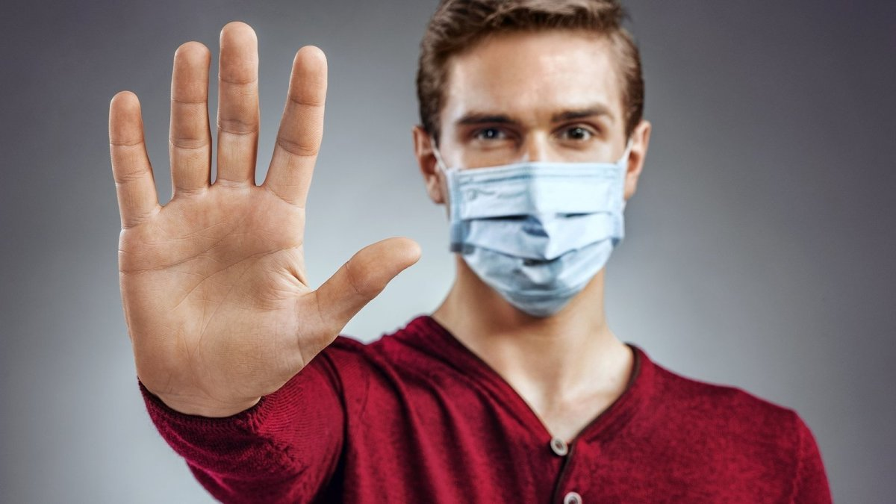
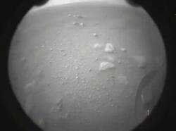
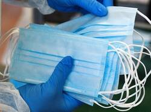
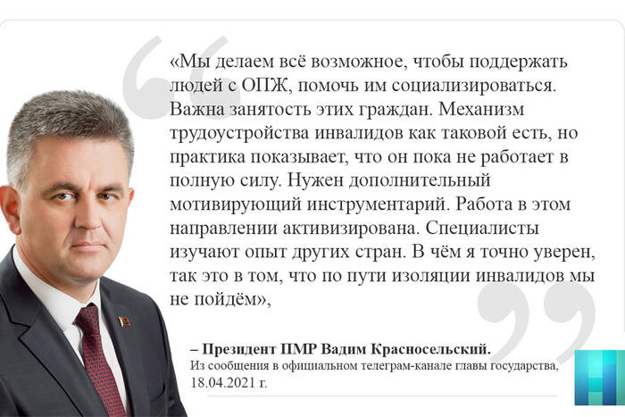
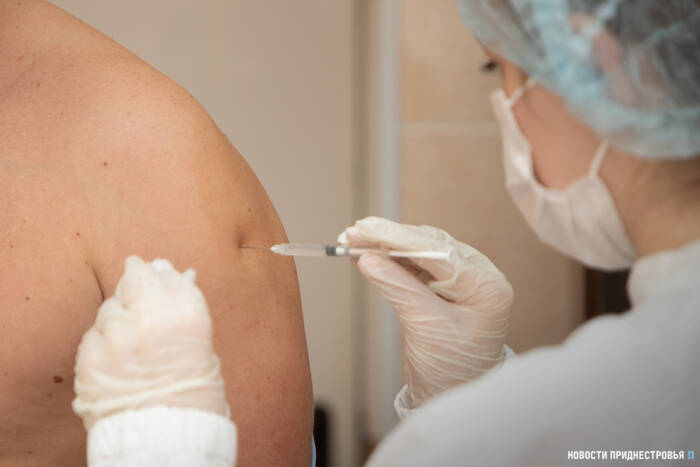
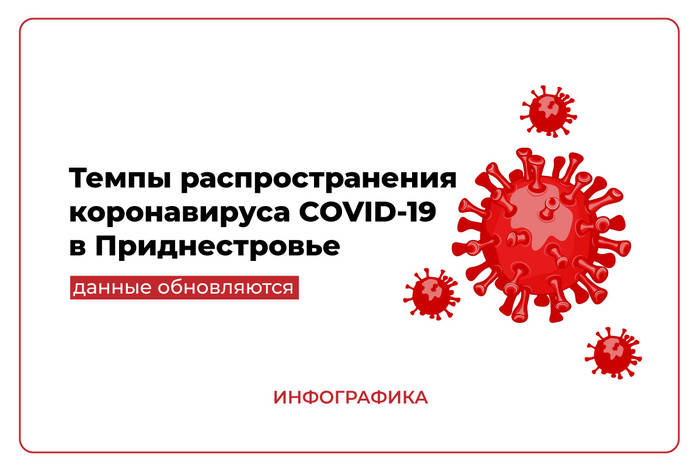
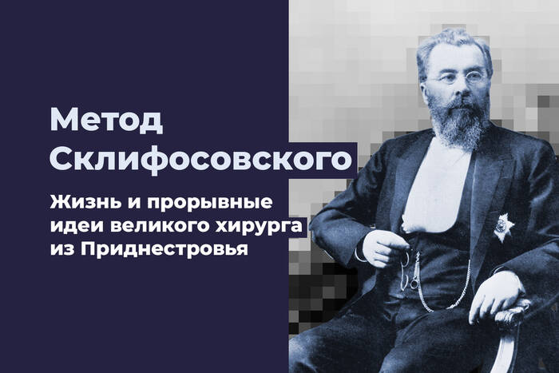
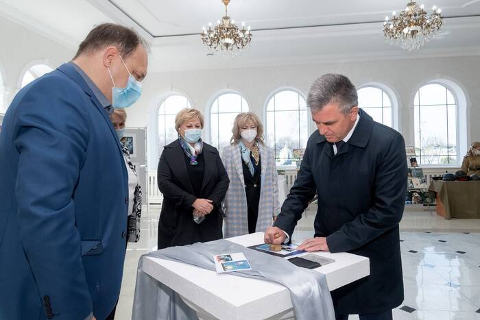
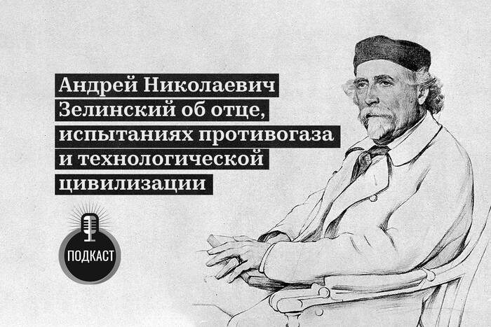
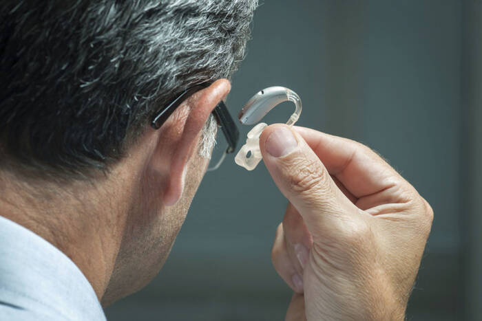

Дистанция, защитные очки и маска существенно снижают риск заражения коронавирусом
Опубликована первая научная работа, которая обобщает все исследования по этой теме

Издание The Lancet опубликовало масштабный обзор, в котором собраны данные 172 исследований по распространению коронавирусной инфекции.В них, среди прочего, рассмотрено, как соблюдение физической дистанции, тканевые маски и защита для глаз снижают интенсивность распространения вирусов.
Рекомендации по предотвращению заражения во время пандемии COVID-19 издавали многие страны и отдельные их регионы.Однако, как пишет портал «Naked Science», зачастую они были весьма противоречивыми.Кроме того, сильно различаются взгляды специалистов на необходимость ношения масок и очков в качестве средств защиты.
«Наша работа стала первой, в которой обобщена вся информация о COVID-19, SARS и MERS и представлены наилучшие из имеющихся на сегодня фактические данные об оптимальном использовании простых мер для сглаживания кривой заболеваемости, — говорит один из авторов статьи Хольгер Шюнеманн.— Правительства и организации общественного здравоохранения могут использовать наши результаты, чтобы дать чёткие рекомендации о защитных мерах для снижения риска заражения».
Исследование показывает, что сохранение дистанции более чем в один метр снижает риск заражения (2,6% против 12,8% при расстоянии менее одного метра от заражённого человека).Однако и дальнейшее увеличение дистанции имеет смысл: каждый дополнительный метр (на расстоянии до 3 м от заболевшего) вдвое снижает риск передачи инфекции.
Исследования по трём вирусам (SARS-CoV, MERS-CoV и SARS-CoV-2), посвящённые защите глаз, показывают, что протективные очки и щитки также снижают риск заболеть.В них он достигает 5,5% против 16% при отсутствии защиты.
Аналогичная картина наблюдается для масок: риск передачи вируса от человека к человеку составляет лишь 3,1% при ношении маски у потенциального реципиента и 17,4% — если лицо не закрыто.
Авторы обзора подчёркивают, что многие из изученных ими работ основаны на данных низкой достоверности или дают лишь приблизительную картину происходящего при контакте двух людей: это касается применения масок и защитных очков.Также нет ни одной работы, которая определяла бы количественно, насколько соблюдение дистанции свыше двух метров снижает риск заражения.
Учёные отмечают, что властям необходимо решить проблему доступа к маскам и другим средствам защиты лица для всех категорий населения.Однако такую защиту ни в коем случае нельзя рассматривать как замену гигиеническим процедурам — мытью рук и лица с мылом.
Posted On: 2020-06-02T13:50:00









Content Date: 2020-06-02
Download Date: 2021-04-21
Document ID: L0C04AO2Q